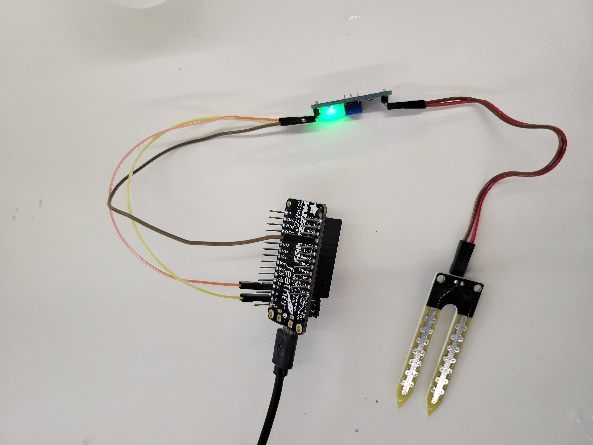
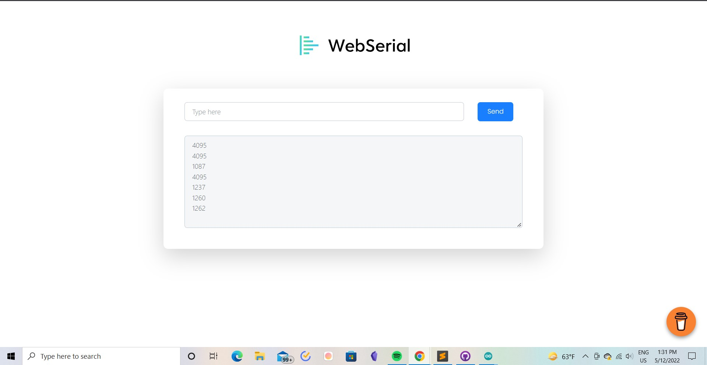

<div class="container-fluid">
### Week 11: Computer Programming
I wanted to use this week to familiarize myself with WebSockets, as well as the hygrometer sensors I hope to use in my final project. To that end, I decided to use [this RandomNerd tutorial](https://randomnerdtutorials.com/esp32-webserial-library/) to create a LAN web server that displays serial data gathered from said hygrometers using WebSockets.
This tutorial uses a library called WebSerial, as well as two packages for ESP32 webservers called ASyncTCP and ESPAsyncWebServer. These allow us to create ESP32 web servers beyond simple HTML GET pages.
I began by installing these three packages. I then wrote the following code, intended to display analog data from the hygrometer at pin A7:
```
#include <Arduino.h>
#include <WiFi.h>
#include <AsyncTCP.h>
#include <ESPAsyncWebServer.h>
#include <WebSerial.h>
#define LED 2
AsyncWebServer server(80);
const char* ssid = "MAKERSPACE"; // Your WiFi SSID
const char* password = "12345678"; // Your WiFi Password
void recvMsg(uint8_t *data, size_t len){
WebSerial.println("Received Data...");
String d = "";
for(int i=0; i < len; i++){
d += char(data[i]);
}
WebSerial.println(d);
if (d == "ON"){
digitalWrite(LED, HIGH);
}
if (d=="OFF"){
digitalWrite(LED, LOW);
}
}
void setup() {
Serial.begin(115200);
pinMode(LED, OUTPUT);
pinMode(A7, INPUT);
WiFi.mode(WIFI_STA);
WiFi.begin(ssid, password);
if (WiFi.waitForConnectResult() != WL_CONNECTED) {
Serial.printf("WiFi Failed!\n");
return;
}
Serial.print("IP Address: ");
Serial.println(WiFi.localIP());
// WebSerial is accessible at "<IP Address>/webserial" in browser
WebSerial.begin(&server);
WebSerial.msgCallback(recvMsg);
server.begin();
}
void loop() {
WebSerial.println(analogRead(A7));
delay(2000);
}
I then attached the hygrometer to the ESP32 as depicted below.

The web-based results can be seen below.

```